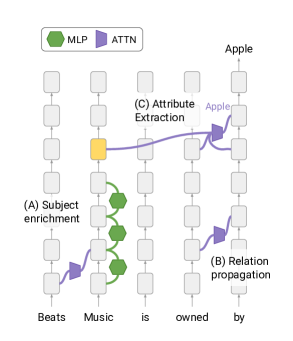
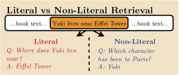
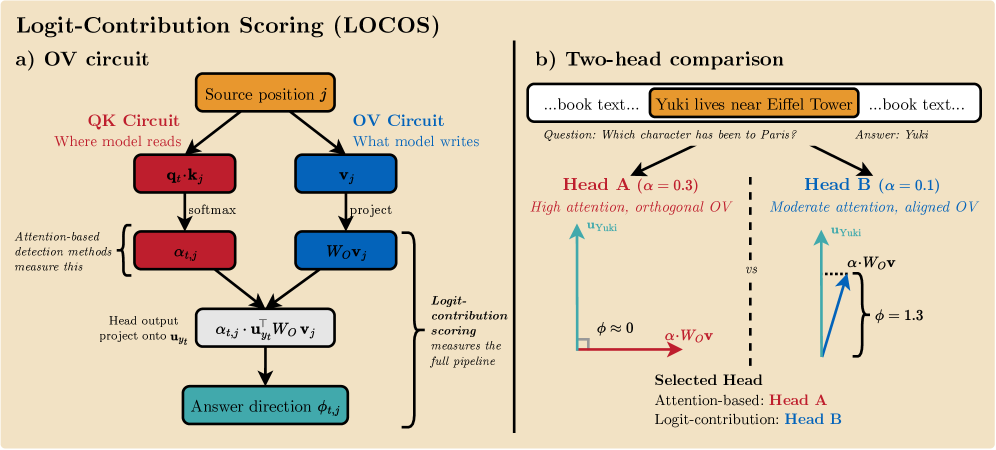
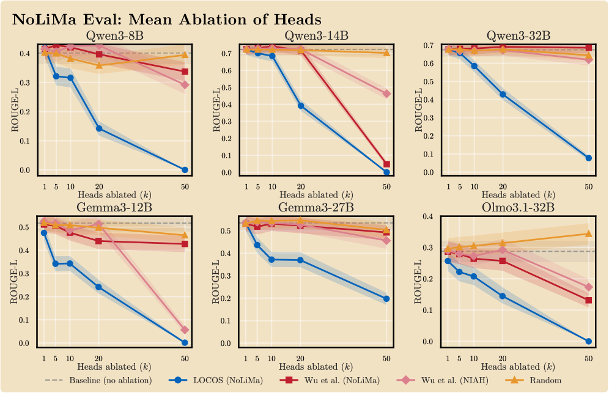

The previous post built ablation attribution: grade the model’s frozen answer with a source in and out of context, and the score gap tells you how much the answer leaned on that source. It’s a good instrument. It also has a gap you hit the first time you use it for real: an answer can lean on the right source at rank one and still be wrong. The model read the file and misread it.
Attribution answers “which source mattered.” It cannot answer “did the model get that source right.” Those are different questions, and splitting them means opening the model past the input/output boundary attribution stays at. This post builds the instrument that does that: a way to score, per attention head, whether what got written into the answer pushed toward the right token or the wrong one, and then a way to test whether the answer actually depended on that write. Two published methods do the work: attention knockout (Geva et al., EMNLP 2023) for the dependence half, and LOCOS (Gema, Alex, Minervini, 2026) for the scoring half, with Wu et al.’s retrieval heads as the instructive failure that motivates both. As before, we build them from scratch, following the exact path of confusions a smart reader actually hits.
Sixty seconds inside a transformer
The two-minute tour, so the rest of the post has something concrete to hang on. Input text becomes tokens; each token becomes an embedding vector; from there the model is a stack of identical blocks, and at the top an output matrix (the unembedding) turns each position’s final vector into a score (a logit) for every token in the vocabulary. Softmax those scores and you have the next-token distribution.
Each block does two things at every position: attention, where the position looks back at earlier positions (causal masking: never forward) and pulls information from them, and an MLP, which processes the position’s own vector in place. Attention is the only mechanism that moves information between positions; it’s how a fact sitting 3,000 tokens back can reach the position that’s about to produce the answer. One block gives one hop; a deep stack gives the model many chances to fetch, combine, and re-fetch.

Information on the move inside a transformer: MLP blocks enrich a position in place (green), attention carries content between positions (purple), and late layers extract it to the position producing the answer. Figure 1 of Geva et al., 2023 (CC BY 4.0).The stream is a sum, not a pipeline
Now the detail the tour usually skips, which everything below depends on: the blocks don’t transform the representation in place, stage by stage. Each attention head and each MLP reads the running vector at a position (the residual stream) and adds its own contribution back into it. The final vector that produces the answer is a sum:
final_state = embedding + head_1_write + head_2_write + ... + mlp_1_write + ...Every head’s contribution is a separate additive term, sitting in the same vector space, at the same position, added into the same sum. That’s what makes it possible to isolate one head’s write and ask what it alone contributed: you don’t have to unwind a pipeline, you just read off one term of a sum.
One head, two circuits
A single attention head does two jobs, and they’re computed by different weight matrices:
- QK decides WHERE to read. The query and key projections produce the attention weights : how much this head looks at each earlier position.
- OV decides WHAT to write. The value projection packages up each attended position’s content; the output projection turns that package into the vector actually added to the residual stream.
A head can nail the first job and blow the second: attend heavily to exactly the right span, and still write something that pushes the answer in the wrong direction. Reading where a head looks tells you nothing about what it does with what it sees.
The detector problem: which of ~800 heads mattered
A 7B-class model has on the order of 28 layers times 28 heads, roughly 800 attention heads. Most contribute nothing to a given answer. You need a cheap way to shortlist the ones that carried context into the output, before you can even ask whether they carried it correctly.
Wu et al.’s retrieval-head test (arXiv 2404.15574) is the obvious first move: a head “retrieves” at a decode step if the token it attends to most equals the token it generates. Run this over hundreds of needle-in-a-haystack trials, and a small, stable set of heads (3-6% of all heads) shows up as consistent copiers across models.
Carry one toy pair through the rest of this post:
COPY CASE
context: "The client retries after 30 seconds."
question: "After how many seconds does the client retry?"
answer: "30" <- appears verbatim in the context
SYNTHESIS CASE
context: "The timeout is half a minute."
question: "How many seconds is the timeout?"
answer: "30" <- appears NOWHERE in the input
The paper’s own version of the same split: one needle, a literal question answered by copying and a non-literal one answered by synthesis. Figure 1 of LOCOS (CC BY 4.0).Both are the same fact. Only the first is a copy. The retrieval-head test scores the copy case fine: the head that attends to “30” and emits “30” lights up. On the synthesis case, there’s no matching source token to attend to and copy: “30” doesn’t exist in the input for any head to point at. The test has nothing to find.
WARNING
Paraphrasing doesn’t hurt the model, it blinds the detector. The model solves both cases; a 7B-class model reading “half a minute” and answering “30” is unremarkable. The copy test only sees the first case, because it’s built to look for a literal match. It isn’t measuring whether the model understood; it’s measuring whether the model happened to quote.
The published evidence for this gap is stark. Wu’s own top-scoring head, evaluated on NIAH (literal needle-in-a-haystack, verbatim recall) versus NoLiMa (answers synthesized from meaning, not copied), collapses 30x: 0.97 down to 0.03. Worse, when you use the copy test’s own scores to pick heads to ablate on a synthesis task, removing them can raise the score at intermediate . The detector isn’t just blind on synthesis, it can point at heads that are causally irrelevant there.
Scoring the write, not the read: LOCOS’s
LOCOS (Gema, Alex, Minervini, arXiv 2607.01002) fixes this by scoring the OV write directly instead of the QK read. Build it bottom-up:
v(t,j) = the head's packaged content of source position j, at decode step t
w(t,j) = W_O @ v(t,j) the full-strength write, if the head attended fully
o(t,j) = alpha(t,j) * w(t,j) the write actually shipped, scaled by attention weight
phi(t,j) = u(y_t) . o(t,j) the write's push toward the answer token, in logit unitsis the row of the model’s output (unembedding) matrix for the token the model actually generated at step . Every vocabulary token has one; it’s always available, whatever the answer is and whatever the input contains. In the running example the model emits “30”, so is literally the output matrix’s row for the token “30”: the direction the final vector has to point in for “30” to win the softmax. asks of each head’s write: how far did you push along that direction?
IMPORTANT
The answer token doesn’t need to appear anywhere in the input. comes from the output side of the model, not from anything in the context. This is exactly what lets score the synthesis case: there’s no “30” in the input to attend to, but there’s always a to project onto.
NOTE
Components, yes; PCA, no. The right picture is force decomposition from physics: many forces act on an object, you pick the axis you care about (here: “toward the answer token”), and project each force onto it. Positive projections helped, negative ones opposed, and they sum to the net push. The axis is chosen by the question, which is the one way this differs from PCA, where the axes are discovered from the data’s own variance. If your brain jumped to PCA at the word “components,” you had the decomposition half right; only the origin of the axis is different.

The whole pipeline in the paper’s own diagram: attention-based detection stops at (left branch); logit-contribution scoring runs the full path down to . The two-head comparison on the right is the punchline: Head A attends harder () but writes orthogonally to the answer (); Head B attends less and pushes the answer up (). An attention-based detector picks A; the write-based one picks B. Figure 2 of LOCOS (CC BY 4.0).is signed and per-source-position. A head can attend to the right span and still write away from the answer, and catches that: it’s exactly the “attended correctly, wrote wrong” failure the copy test structurally cannot see, because the copy test never looks at what got written, only at where the head looked.
LOCOS turns this into a per-head score by contrasting needle positions against everything else: sums over the planted fact’s positions, sums it over the background (length-rescaled so a longer background doesn’t automatically win by volume), and the head’s score is , averaged over decode steps of trials the model actually gets right.
Why a memorized answer scores flat
If the model already knows the fact from pretraining and never needs the context at all, does falsely credit some head with “finding” it? No, and the reason follows straight from the definition: is computed per source position . A parametric, memory-driven answer has no source position; it enters the residual stream through the MLP blocks and the embedding pathway, not through an attention head reading a context span. Contrast a purely memorized answer against the needle and the background, and both and come out near zero: nothing in the context is doing the pushing either way. Flat is the correct reading, not a blind spot.
That same additive picture is also the whole story behind confidently-wrong answers. The answer’s logit is a sum of context-writes and memory-writes; if the model states something false with total confidence, that isn’t mysterious, it’s arithmetic. Two routes get you there: propagation failure (the context never actually arrives at the answer position, so the prior wins by default) and prior override (the context does arrive, but the memory term pushes harder and wins the sum anyway). Either is checkable with exactly the same decomposition: is the context term present and pushing the right way, and does it win the sum.
Measurement is not causation
A head with a high score told you it wrote toward the answer. It did not tell you the answer needed that write. Transformers self-repair: knock out a head that’s genuinely doing work, and parallel heads elsewhere in the network can compensate, restoring most of the output (the “hydra effect,” McGrath et al., arXiv 2307.15771; extended by Rushing & Nanda, arXiv 2402.15390, who find the compensation is imperfect and noisy, not a clean guarantee). A high- head can be redundant. A low- head can still be necessary if it feeds something else that does the pushing. Scoring writes and testing necessity are two different experiments.
The removal test. LOCOS’s causal check: mean-ablate a head by replacing its post-projection, pre-RoPE query vector with a calibration mean, computed from 50 passing calibration trials. RoPE then rotates that fixed query per position, which makes the head’s attention pattern approximately content-independent rather than simply switched off, a gentler intervention than zeroing. Ablation is swept in groups (top- for ), never single heads: hydra-effect self-repair is far easier to defeat by removing several redundant paths at once than by removing one and hoping nothing steps in.
The dissociation control checks the ablation is hitting the right target: alongside the synthesis-task score, LOCOS tracks parametric recall (city-country pairs, PopQA) and two-operand arithmetic. If ablating the -selected heads also tanked arithmetic, you’d have found “heads that matter for everything,” not “heads that carry synthesis.” They stay near baseline.
Published numbers, on Qwen3-8B: top-50 LOCOS-selected heads, ablated together, drive NoLiMa ROUGE-L from 0.401 to 0.000. The strongest Wu-style baseline, ablated the same way, only gets it down to 0.292. The head sets barely overlap: 2 of the top 10 LOCOS heads are also in Wu’s top 10. Different heads, doing different work, and the copy-test-selected set is the wrong one to remove if you want the synthesis behavior gone.

The removal test across six models: ablating LOCOS-selected heads (blue) collapses the synthesis task while Wu-selected and random baselines barely move it. The top-left panel is the Qwen3-8B collapse quoted above. Figure 3 of LOCOS (CC BY 4.0).Attention knockout is the necessity-side sibling. Geva et al. (EMNLP 2023, arXiv 2304.14767) test necessity a different way: mask the pre-softmax attention score to for a query-source edge, over a window of 5 to 9 consecutive layers (a single layer underestimates necessity, because nearby layers offer redundant paths around it), restricted to the specific query positions under test rather than the whole sequence. It’s a coarser, cheaper cousin of -based ablation: it tells you the edge carried something the answer needed, not that what traveled through it was correct. That’s exactly why the two belong together, one screens for correctness of write, the other confirms necessity of the edge that carried it.
Where it breaks
The series signature: never skip the part where the instrument stops working.
- The active head set churns. A fixed head list computed once and reused overlaps the true per-instance, per-decode-step active set at a Jaccard of only 0.18 to 0.46 (the dynamic-heads finding, arXiv 2602.11162). Masking the true per-step heads collapses accuracy to zero; masking an equal-count static set does far less damage. A one-time head list is a documented failure mode, not a simplifying assumption you can wave off.
- Token lineage blurs with depth. By late layers, the residual stream at position holds heavily mixed information: earlier layers move content across positions before later ones extract it (Geva et al. trace exactly this, subject-enrichment then extraction to the final position). “This head pulled from position ” is not the same claim as “this head pulled from the original token that started at position .” What survives cleanly is the circuit-level claim (these heads are necessary for this behavior), not a claim about which exact input token the information began as. The rigorous alternative, path patching against a counterfactual run, would settle the lineage properly, and it’s priced out at long context: three forward passes per tested edge plus the same quadratic-memory cost activation patching already has.
- The background contrast penalizes broad relevance. LOCOS’s own stated limitation: when distractor content in the background is topically related to the answer, it inflates , which can penalize a head that’s doing legitimate broad semantic matching rather than narrow needle-reading.
Before trusting it
None of the numbers above are ours; they’re the published LOCOS and Geva results, ported to check that the mechanism reasons correctly. That is deliberately not the same as trusting the instrument on new content. An instrument earns trust the same way a claim does: by reproducing a pre-registered fingerprint on material where the ground truth is planted and known, with the pass bars fixed before the results exist, and it keeps that trust only at the scope the validation actually covered. The series signature applies to the instruments themselves: the part where they stop working gets measured, never assumed away.
References.
- Gema, Alex, Minervini, “Logit-Contribution Scoring Identifies Non-Literal Retrieval Heads” (LOCOS), arXiv 2607.01002; code at github.com/aryopg/locos.
- Geva, Bastings, Filippova, Globerson, “Dissecting Recall of Factual Associations in Auto-Regressive Language Models,” EMNLP 2023, arXiv 2304.14767.
- Wu, Wang, Xiao, Peng, Fu, “Retrieval Head Mechanistically Explains Long-Context Factuality,” arXiv 2404.15574.
- McGrath, Rahtz, Kramár, Mikulik, Legg, “The Hydra Effect: Emergent Self-repair in Language Model Computations,” arXiv 2307.15771.
- Rushing, Nanda, “Explorations of Self-Repair in Language Models,” arXiv 2402.15390.
- On the per-instance churn of the active head set: arXiv 2602.11162.
- On whether attention weights are explanations at all: Jain, Wallace, “Attention is not Explanation,” arXiv 1902.10186, and the rebuttal, Wiegreffe, Pinter, “Attention is not not Explanation,” arXiv 1908.04626.